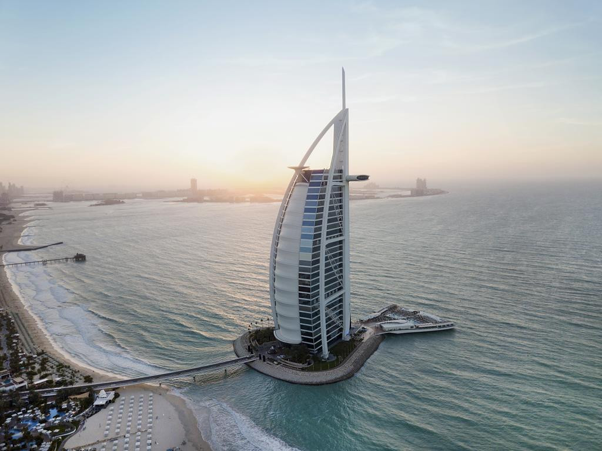
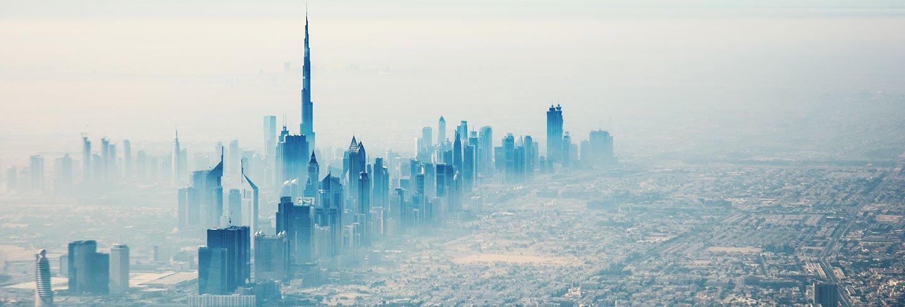

Dubai (em árabe: دبيّ, Dubayy) é a maior cidade e emirado de mesmo nome dos Emirados Árabes Unidos (uma federação de monarquias absolutas hereditárias árabes). O Emirado de Dubai está localizado na costa do Golfo Pérsico, sendo um dos sete emirados que compõem o país. Dubai é o emirado mais populoso entre os sete emirados, com aproximadamente 2 262 000 habitantes. Está localizada ao longo da costa sul do Golfo Pérsico na Península Arábica na Ásia. O município muitas vezes é chamado de Cidade de Dubai para diferenciá-lo do emirado homônimo. A cidade é conhecida mundialmente por ser extremamente desenvolvida e por seus enormes arranha-céus e largas avenidas.
Existem registros da existência da cidade pelo menos 150 anos antes da formação dos EAU. Dubai divide funções jurídicas, políticas, militares e econômicas com os outros emirados, embora cada emirado tenha jurisdição sobre algumas funções, tais como a aplicação da lei civil e fornecimento e manutenção de instalações locais. Dubai tem a maior população e é o segundo maior emirado por área, depois de Abu Dhabi. Dubai e Abu Dhabi são os únicos emirados que possuem poder de veto sobre questões de importância nacional na legislatura do país. Dubai tem sido governado pela dinastia Al Maktoum desde 1833. O atual governante de Dubai, Mohammed bin Rashid Al Maktoum, é também o Primeiro-Ministro e Vice Presidente dos Emirados Árabes Unidos.
Fonte: